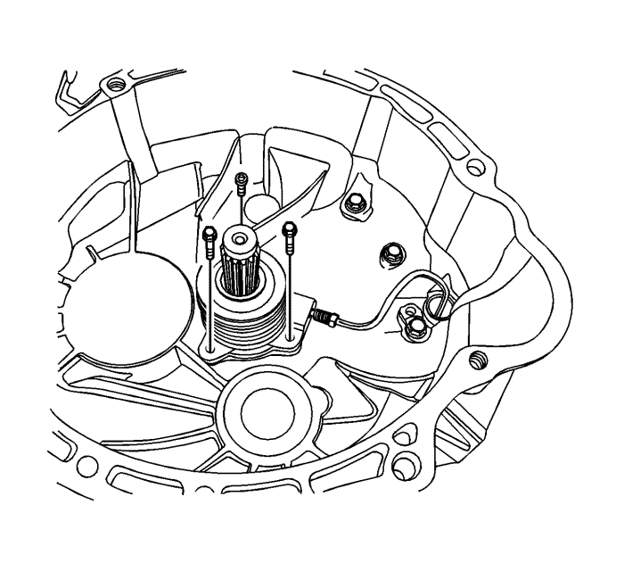
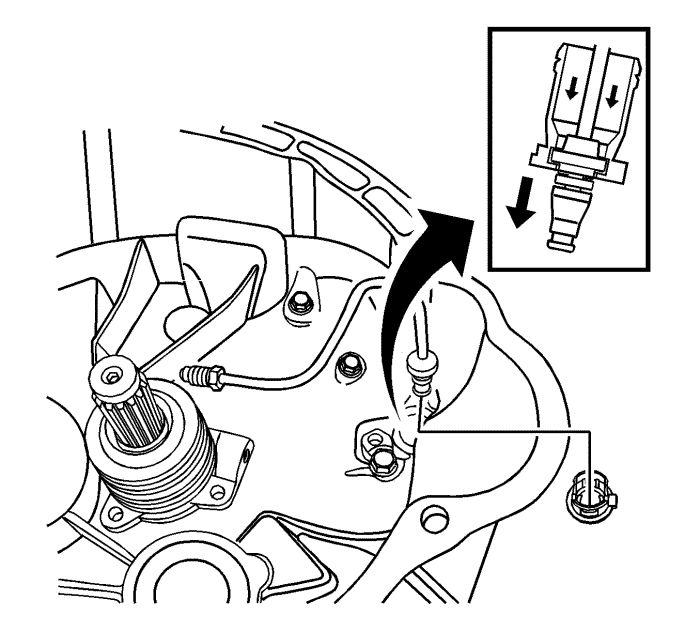
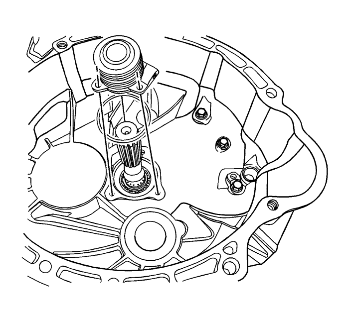
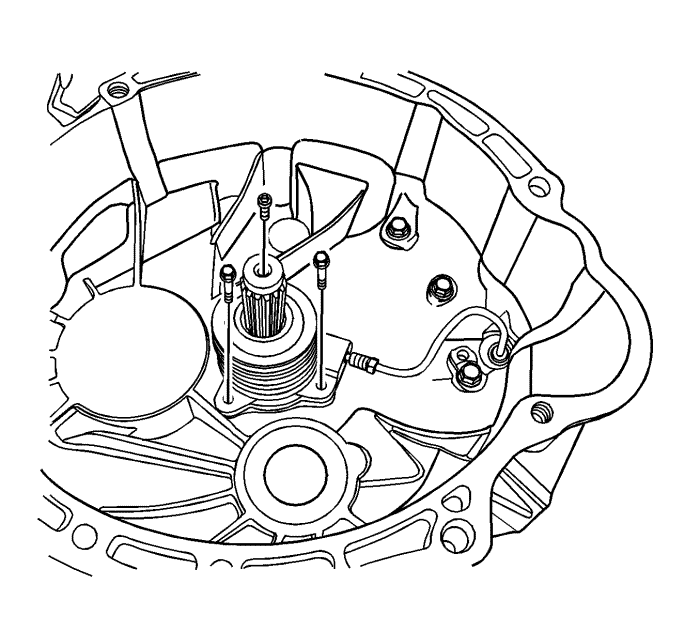
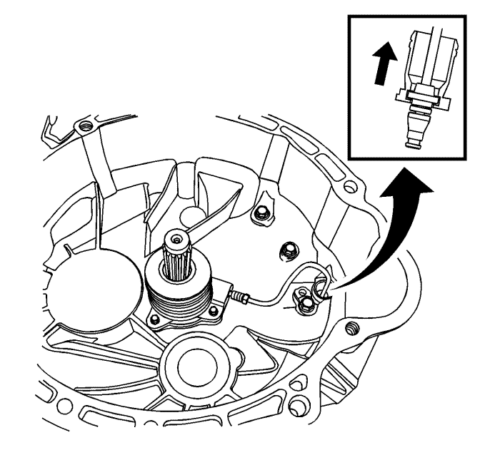

Sustitución del cilindro concéntrico actuador del embrague
Procedimiento de desmontaje

- Desmontar el eje de transmisión del vehículo. Consultar Sustitución de la caja de cambios .
- Desmonte los tornillos de fijación del cilindro receptor concéntrico.
- Desconecte la tubería del cilindro receptor concéntrico de dicho cilindro.

Nota: Cuando desmonte el cojinete, asegúrese de no desmontarlo con excesiva fuerza.
- Desmonte el cojinete del tubo del cilindro esclavo concéntrico en la carcasa del eje de transmisión.
- Desmonte la tubería del cilindro receptor concéntrico.

- Desmonte la junta tórica y el cilindro receptor concéntrico.
Procedimiento de montaje
- Monte la junta tórica y el cilindro receptor concéntrico.
Precaución: Consulte Precaución con las fijaciones en la sección Prólogo

- Después de montar el tornillo del tubo provisionalmente, ajuste los tornillos de sujeción del cilindro esclavo concéntrico a 8-12 N·m (71-106 lb in).
- Apriete el tornillo del tubo a 16 N·m (12 lb ft).

- Monte el cojinete en la carcasa del eje de transmisión.
- Conecte el tubo con el cojinete.
- Monte el eje de transmisión en el vehículo. Consultar Sustitución de la caja de cambios .
| © Copyright Chevrolet Europe. All rights reserved |